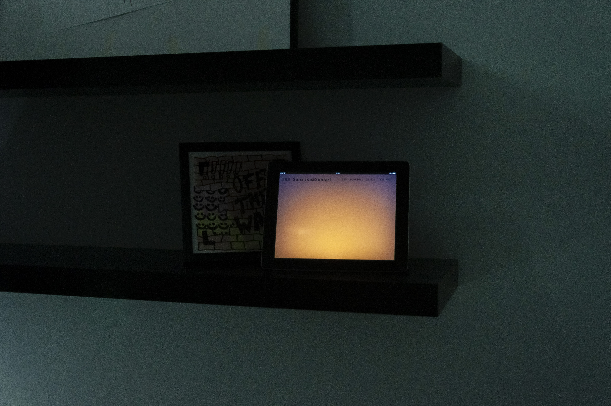
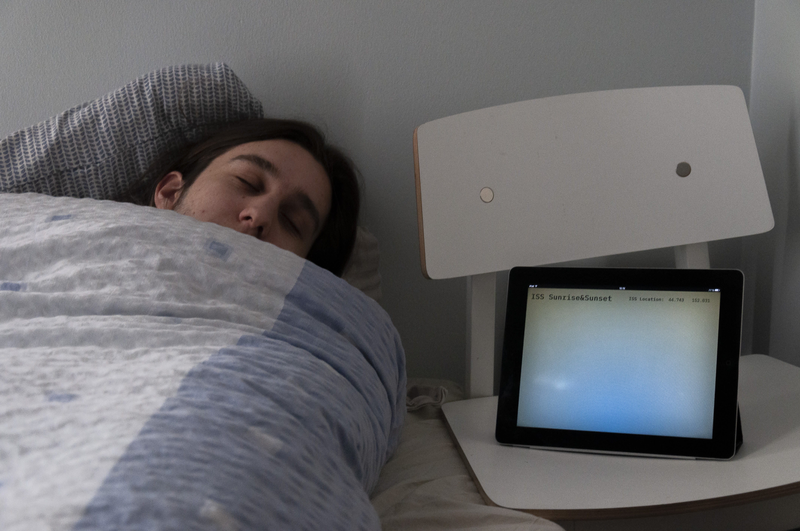
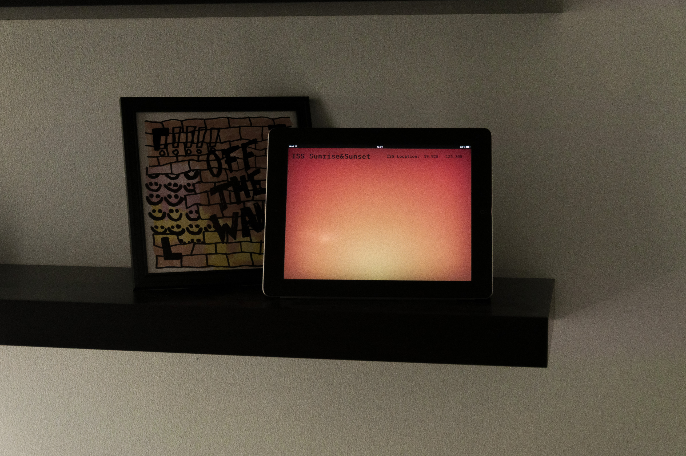

The International Space Station (ISS) travels in orbit around around Earth at a speed of 27 600km/h. At this incredible speed it uses 90 minutes to travel around the whole globe. The crew onboard experiences 15 sunrises and sunsets every 24 hours. This ambient display uses the ISS current position + sunrise and sunset times to give you the same experience at home.
  